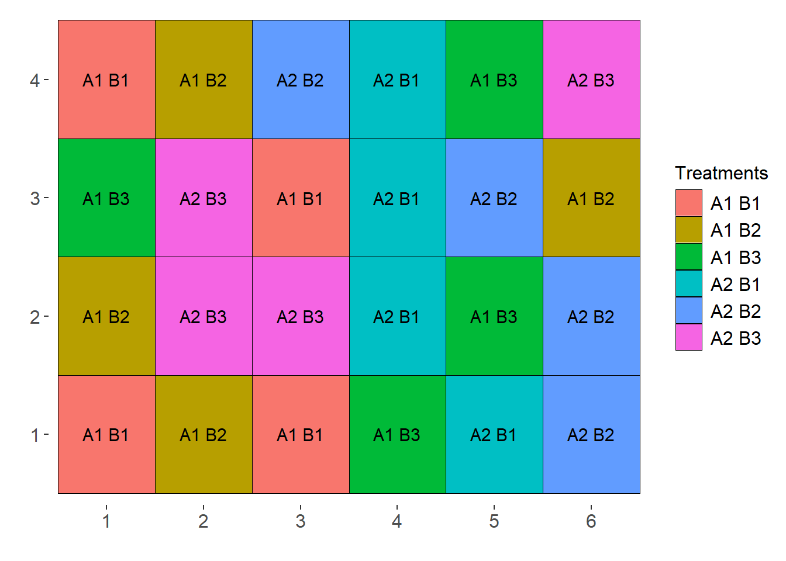
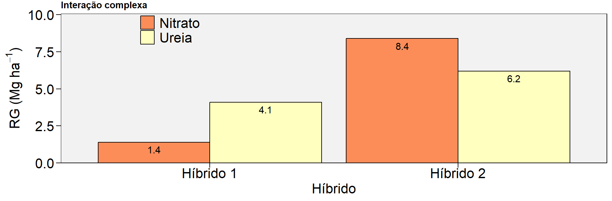
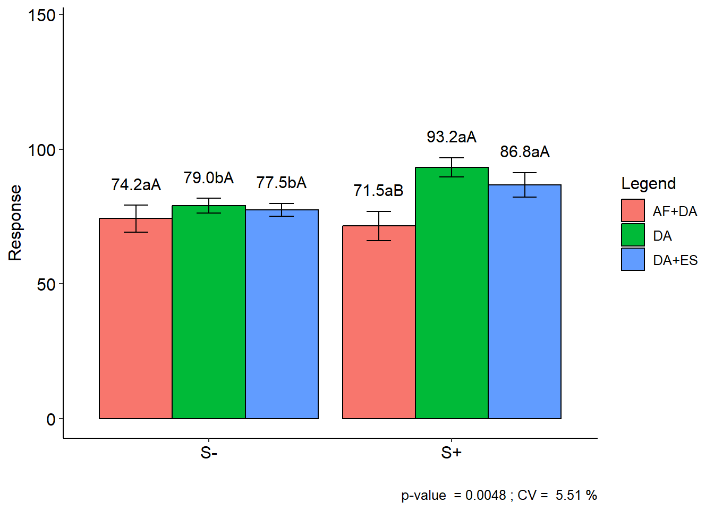
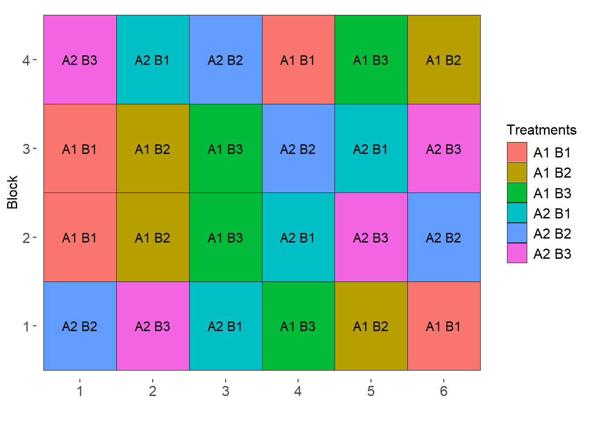
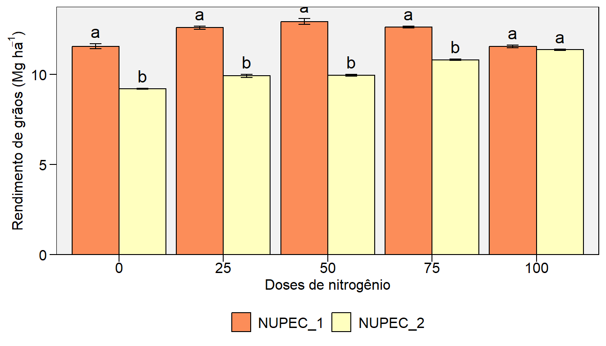

library(tidyverse)
library(metan) # estatísticas descritivas
library(rio) # importação/exportação de dados
library(emmeans) # comparação de médias
library(AgroR) # casualização e ANOVA10. Experimentos Fatoriais
Pacotes
Experimentos fatoriais
Experimentos fatoriais são muito comuns nas ciências agrárias, pois permitem o estudo de dois ou mais fatores em um mesmo experimento. Diversas são as vantagens em se conduzir um experimento deste tipo. Dentre elas, podemos citar a redução de custos, quando comparado à realizar um experimento para cada fator, a otimização da área experimental e dos tratos culturais, bem como a possibilidade de identificar o efeito de dois ou mais fatores sobre a magnitude da variável resposta. Esta é, talvez, a principal vantagem destes experimentos. Ao memo tempo, no entanto, é a fonte de um dos maiores desafios encontrados no meio acadêmico. O surgimento de uma terceira fonte de variação, conhecida por interação.
Casualização
Delineamento Inteiramente Casualizado
sketch(trat= c("A1", "A2"),
trat1 = c("B1", "B2", "B3"),
design = "FAT2DIC",
r = 4)
Delineamento de Blocos Casualizados
sketch(trat= c("A1", "A2"),
trat1 = c("B1", "B2", "B3"),
design = "FAT2DBC",
r = 4)
Tipos de interação
Ausência de interação
# sem interação
dfsi <- tribble(
~GEN, ~FONTEN, ~RG,
"Híbrido 1","Ureia", 5.7,
"Híbrido 1","Nitrato", 6.8,
"Híbrido 2","Ureia", 8.2,
"Híbrido 2","Nitrato", 9.3)
p1 <-
plot_factbars(dfsi, GEN, FONTEN, resp = RG,
ylab = expression(paste("RG (Mg ",ha^-1, ")")),
y.expand = 0.2,
size.text = 16,
values = TRUE,
errorbar = F,
xlab = "Híbrido",
legend.position = c(0.2, 0.89)) +
ggtitle("Ausência de interação")Warning: There were 4 warnings in `summarise()`.
The first warning was:
ℹ In argument: `ci = se * qt(level/2 + 0.5, n() - 1)`.
ℹ In group 1: `GEN = Híbrido 1` `FONTEN = Nitrato`.
Caused by warning in `qt()`:
! NaNs produzidos
ℹ Run `dplyr::last_dplyr_warnings()` to see the 3 remaining warnings.p1
De posse dos dados, vamos construir uma tabela dupla entrada com os valores totais e outra com os valores médios. Os efeitos da interação são calculados como…
mat_dfsi <- make_mat(dfsi, GEN, FONTEN, RG)
mat_dfsi Nitrato Ureia
Híbrido 1 6.8 5.7
Híbrido 2 9.3 8.2# tabela dupla entrada (totais)
mat_dfsi |>
row_col_sum() Nitrato Ureia row_sum
Híbrido 1 6.8 5.7 12.5
Híbrido 2 9.3 8.2 17.5
col_sum 16.1 13.9 30.0# tabela dupla entrada (totais)
mat_dfsi |>
row_col_mean() Nitrato Ureia row_mean
Híbrido 1 6.80 5.70 6.25
Híbrido 2 9.30 8.20 8.75
col_mean 8.05 6.95 7.50# soma de quadrados do fator GEN
rowSums(mat_dfsi) ^ 2Híbrido 1 Híbrido 2
156.25 306.25 modsi <- aov(RG ~ GEN * FONTEN, data = dfsi)
summary(modsi) Df Sum Sq Mean Sq
GEN 1 6.25 6.25
FONTEN 1 1.21 1.21
GEN:FONTEN 1 0.00 0.00Interação simples (quantitativa)
# interação simples
df_is <- tribble(
~GEN, ~FONTEN, ~RG,
"Híbrido 1","Ureia", 4.5,
"Híbrido 1","Nitrato", 1.9,
"Híbrido 2","Ureia", 11,
"Híbrido 2","Nitrato", 5.3)
p2 <-
plot_factbars(df_is, GEN, FONTEN, resp = RG,
ylab = expression(paste("RG (Mg ",ha^-1, ")")),
y.expand = 0.2,
size.text = 16,
errorbar = F,
values = TRUE,
xlab = "Híbrido",
legend.position = c(0.2, 0.89)) +
ggtitle("Interação simples")Warning: There were 4 warnings in `summarise()`.
The first warning was:
ℹ In argument: `ci = se * qt(level/2 + 0.5, n() - 1)`.
ℹ In group 1: `GEN = Híbrido 1` `FONTEN = Nitrato`.
Caused by warning in `qt()`:
! NaNs produzidos
ℹ Run `dplyr::last_dplyr_warnings()` to see the 3 remaining warnings.p2Interação complexa (qualitativa)
# interação complexa
df_ic <- tribble(
~GEN, ~FONTEN, ~RG,
"Híbrido 1","Ureia", 4.1,
"Híbrido 1","Nitrato", 1.4,
"Híbrido 2","Ureia", 6.2,
"Híbrido 2","Nitrato", 8.4)
p3 <-
plot_factbars(df_ic, GEN, FONTEN, resp = RG,
ylab = expression(paste("RG (Mg ",ha^-1, ")")),
y.expand = 0.2,
size.text = 16,
errorbar = F,
values = TRUE,
xlab = "Híbrido",
legend.position = c(0.2, 0.89)) +
ggtitle("Interação complexa")Warning: There were 4 warnings in `summarise()`.
The first warning was:
ℹ In argument: `ci = se * qt(level/2 + 0.5, n() - 1)`.
ℹ In group 1: `GEN = Híbrido 1` `FONTEN = Nitrato`.
Caused by warning in `qt()`:
! NaNs produzidos
ℹ Run `dplyr::last_dplyr_warnings()` to see the 3 remaining warnings.p3
Modelo estatístico
Vamos considerar como exemplo, um experimento que avaliou a influencia de dois fatores, digamos \(\alpha\) e \(\tau\), em uma determinada variável resposta. O modelo estatístico considerado neste tipo de experimento é:
\[ {y_{ijk}} = {\rm{ }}\mu {\rm{ }} + {\rm{ }}\mathop \beta \nolimits_{k} + \mathop \alpha \nolimits_i + \mathop \tau \nolimits_j + \mathop {(\alpha \tau )}\nolimits_{ij} + {\rm{ }}\mathop \varepsilon \nolimits_{ijk} \]
onde \({y_{ijk}}\) é o valor observado da combinação do i-ésimo nível do fator \(\alpha\) com o j-ésimo nível do fator \(\tau\) no k-ésimo bloco; \(\mu\) é a média geral; \(\mathop \beta \nolimits_{k}\) é o efeito do bloco k; \(\mathop \alpha \nolimits_i\) é o efeito do i-ésimo nível de \(\alpha\) ; \(\mathop \tau \nolimits_j\) é o efeito do j-ésimo nível de \(\tau\) ; \(\mathop {(\alpha \tau )}\nolimits_{ij}\) é o efeito da interação do i-ésimo nível de \(\alpha\) com o j-ésimo nível de \(\tau\); e \(\mathop \varepsilon \nolimits_{ijk}\) é o erro aleatório associado a \({y_{ijk}}\), assumindo \(\mathop \varepsilon \nolimits_{ijk} \mathop \cap \limits^{iid} N(0,\mathop \sigma \nolimits^2 )\).
Basicamente, estes fatores podem ser divididos em dois tipos: qualitativos e quantitativos. Um fator qualitativo é, como o nome já diz, relacionado a qualidade, ou seja, diferentes em tipo, mas não em quantidade. Como exemplo, podemos citar cultivares, defensivos agrícolas, práticas de manejo, etc. Um fator quantitativo, por outro lado, é caracterizado pela quantidade utilizada no experimento. Podemos citar, por exemplo, doses de adubação. Cabe ressaltar que o termo fatorial não indica um delineamento experimental, mas uma forma de arranjo de tratamentos na área parcela. Estes experimentos podem ser conduzidos tanto em DIC quanto DBC. Assim, em cada repetição/bloco, o tratamento a ser aplicado é a combinação dos níveis dos dois fatores.
Interpretação
graph TD A[Bi-Fatorial] --> B[Quali x Quali] A --> C[Quali x Quanti] A --> D[Quanti x Quanti] B --> E[Interação] E --> F[Sim] E --> G[Não] C --> H[Interação] H --> I[Sim] H --> J[Não] D --> K[Interação] K --> L[Sim] K --> M[Não]
Conjunto de dados
O conjunto de dados utilizado neste exemplo é adaptado de OLIVOTO et al. (2016) sendo oriundo de um experimento que testou o efeito de diferentes parcelamentos de nitrogênio (N) associado ao uso de enxofre (S) na produtividade, componentes do rendimento e qualidade reológica da farinha de trigo.
OLIVOTO, T. et al. Sulfur and nitrogen effects on industrial quality and grain yield of wheat. Revista de Ciências Agroveterinárias, v. 15, n. 1, p. 24–33, 2016. Disponível em: https://doi.org/10.5965/223811711512016024
Os tratamentos consistiram da combinação de três níveis de parcelamento de N (DA: 100% no duplo anel; AF+DA: 50% no afilhamento + 50% no duplo anel; DA+ES: 50% no afilhamento + 50% no espigamento) e dois níveis de enxofre (S+: com enxofre; S-: sem enxofre).
Para fins didáticos, a extensibilidade da massa (L, mm) é utilizada. Para importação, utiliza-se a função import() do pacote rio. A função as_factor converte as primeiras três colunas para fator.
url <- "https://bit.ly/df_biostat"
df_fat <-
import(url, sheet = "FAT1_CI2", setclass = "tbl") |>
metan::as_factor(1:3)No seguinte gráfico, apresento as médias observadas da extensibilidade nos diferentes tratamentos.
plot_factbars(df_fat, ENX, NIT, resp = L)
Verificação de outliers
A função inspect do pacote metan é utilizada para inspecionar o conjunto de dados. Com esta função, é possível identificar possíveis outliers, bem como valores faltantes.
inspect(df_fat, plot = TRUE)
## # A tibble: 4 × 10
## Variable Class Missing Levels Valid_n Min Median Max Outlier Text
## <chr> <chr> <chr> <chr> <int> <dbl> <dbl> <dbl> <dbl> <lgl>
## 1 ENX factor No 2 24 NA NA NA NA NA
## 2 NIT factor No 3 24 NA NA NA NA NA
## 3 REP factor No 4 24 NA NA NA NA NA
## 4 L numeric No - 24 67 78.5 96 0 NAEstatística descritiva
A função desc_stat() do pacote metan computa estatísticas descritivas para a variável L.
desc_stat(df_fat)
## # A tibble: 1 × 10
## variable cv max mean median min sd.amo se ci.t n.valid
## <chr> <dbl> <dbl> <dbl> <dbl> <dbl> <dbl> <dbl> <dbl> <dbl>
## 1 L 10.5 96 80.4 78.5 67 8.43 1.72 3.56 24Análise de variância
Manual
mat_df_fat <- make_mat(df_fat, ENX, NIT, L, fun = sum)
mat_df_fat AF+DA DA DA+ES
S- 297 316 310
S+ 286 373 347# total dos blocos
tbloco <- sum_by(df_fat, REP) |> pull()
I <- nlevels(df_fat$ENX)
J <- nlevels(df_fat$NIT)
K <- nlevels(df_fat$REP)
# fator de correção
C <- sum(df_fat$L) ^ 2 / (I*J*K)
# soma de quadrado total
sqtot <- sum(df_fat$L ^ 2) - C
# soma de quadrado de bloco
sqbloco <- sum(tbloco ^ 2) / (I*J) - C
# soma de quadrados de ENX (a)
sqa <- sum(rowSums(mat_df_fat) ^ 2) / (J * K) - C
# soma de quadrados de NIT (b)
sqb <- sum(colSums(mat_df_fat) ^ 2) / (I * K) - C
# soma de quadrados da interação (a x b)
sqab <- sum(mat_df_fat ^ 2) / K - C - sqa - sqb
# soma de quadrado do erro
sqerr <- sqtot - sqa - sqb - sqab - sqbloco
# montar a tabela
FV <- c("BLOCO", "ENX", "NIT", "ENX*NIT", "ERRO", "TOTAL")
GL <- c(3, 1, 2, 2, 15, 23)
SQ <- c(sqbloco, sqa, sqb, sqab, sqerr, sqtot)
QM <- SQ / GL
FC <- QM / QM[5]
FC[5:6] <- NA
data.frame(FV = FV, GL = GL, SQ = SQ, QM = QM, FC = FC) FV GL SQ QM FC
1 BLOCO 3 10.45833 3.486111 0.1779889
2 ENX 1 287.04167 287.041667 14.6553680
3 NIT 2 739.00000 369.500000 18.8654092
4 ENX*NIT 2 305.33333 152.666667 7.7946391
5 ERRO 15 293.79167 19.586111 NA
6 TOTAL 23 1635.62500 71.114130 NAA análise de variância é computada no software R utilizando a função aov(). Considerando o Delineamento de Blocos Casualizados (DBC), as três fontes de variação incluídas no modelo são a de enxofre (ENX), nitrogênio (NIT) e bloco (REP). Note que todos os termos (efeito principal e interação) podem ser declarados quando se utiliza ENX*NIT; também é possível indicar termos específicos no modelo.
# opção 1
anova <- aov(L ~ ENX*NIT + REP, data = df_fat)
# modelo idêntico, indicando os termos explicitamente
anova <- aov(L ~ ENX + NIT + ENX:NIT + REP, data = df_fat)
summary(anova)
## Df Sum Sq Mean Sq F value Pr(>F)
## ENX 1 287.0 287.0 14.655 0.00165 **
## NIT 2 739.0 369.5 18.865 8.04e-05 ***
## REP 3 10.5 3.5 0.178 0.90965
## ENX:NIT 2 305.3 152.7 7.795 0.00477 **
## Residuals 15 293.8 19.6
## ---
## Signif. codes: 0 '***' 0.001 '**' 0.01 '*' 0.05 '.' 0.1 ' ' 1Comparação de médias
A análise de variância revelou efeito significativo da interação. Nesse caso, segue-se comparando as médias do fator nitrogênio dentro de cada nível do fator enxofre e do enxofre dentro de cada nível do fator nitrogênio. Para isso, utilizo o pacote emmeans (teste Tukey). Nesta abordagem, a avaliação da significância das médias de dois tratamentos é dada pela sobreposição das flechas de cada tratamento. Se dois tratamentos apresentam setas que se sobrepõem (considerando o eixo x), assume-se que estes tratamentos são estatisticamente diferentes um do outro.
medias_fat <- emmeans(anova, ~ NIT | ENX)
plot(medias_fat,
CIs = FALSE, # remove os intervalos de confiança das médias
comparisons = TRUE) # insere setas para comparação de médias (Tukey)Pacote AgroR
No pacote agroR, a análise de variância neste delineamento pode ser realizada com a função FAT2DBC().
with(df_fat,
FAT2DBC(ENX, NIT, REP, L))
##
## -----------------------------------------------------------------
## Normality of errors
## -----------------------------------------------------------------
## Method Statistic p.value
## Shapiro-Wilk normality test(W) 0.922206 0.06536118
##
## -----------------------------------------------------------------
## Homogeneity of Variances
## -----------------------------------------------------------------
## Method Statistic p.value
## Bartlett test(Bartlett's K-squared) 2.459752 0.782544
##
## -----------------------------------------------------------------
## Independence from errors
## -----------------------------------------------------------------
## Method Statistic p.value
## Durbin-Watson test(DW) 1.682362 0.04036279
##
## -----------------------------------------------------------------
## Additional Information
## -----------------------------------------------------------------
##
## CV (%) = 5.51
## Mean = 80.375
## Median = 78.5
## Possible outliers = No discrepant point
##
## -----------------------------------------------------------------
## Analysis of Variance
## -----------------------------------------------------------------
## Df Sum Sq Mean.Sq F value Pr(F)
## F1 1 287.04167 287.041667 14.6553680 1.645485e-03
## F2 2 739.00000 369.500000 18.8654092 8.038974e-05
## Block 3 10.45833 3.486111 0.1779889 9.096501e-01
## F1 × F2 2 305.33333 152.666667 7.7946391 4.774361e-03
## Residuals 15 293.79167 19.586111
## -----------------------------------------------------------------
##
## Significant interaction: analyzing the interaction
##
## -----------------------------------------------------------------
##
## -----------------------------------------------------------------
## Analyzing F1 inside of each level of F2
## -----------------------------------------------------------------
## Df Sum Sq Mean Sq F value Pr(>F)
## Block 3 10.46 3.49 0.1780 0.9096501
## F2 2 739.00 369.50 18.8654 8.039e-05 ***
## F1 × F2 + F1 3 592.38 197.46 10.0815 0.0006909 ***
## F1:F2 AF+DA 1 15.13 15.13 0.7722 0.3933874
## F1:F2 DA 1 406.13 406.13 20.7354 0.0003805 ***
## F1:F2 DA+ES 1 171.12 171.12 8.7371 0.0098160 **
## Residuals 15 293.79 19.59
## ---
## Signif. codes: 0 '***' 0.001 '**' 0.01 '*' 0.05 '.' 0.1 ' ' 1
##
## -----------------------------------------------------------------
## Analyzing F2 inside of the level of F1
## -----------------------------------------------------------------
##
## Df Sum Sq Mean Sq F value Pr(>F)
## Block 3 10.46 3.49 0.1780 0.909650
## F1 1 287.04 287.04 14.6554 0.001645 **
## F1 × F2 + F2 4 1044.33 261.08 13.3300 7.897e-05 ***
## F2:F1 S- 2 47.17 23.58 1.2041 0.327368
## F2:F1 S+ 2 997.17 498.58 25.4560 1.508e-05 ***
## Residuals 15 293.79 19.59
## ---
## Signif. codes: 0 '***' 0.001 '**' 0.01 '*' 0.05 '.' 0.1 ' ' 1
##
## -----------------------------------------------------------------
## Final table
## -----------------------------------------------------------------
## AF+DA DA DA+ES
## S- 74.2 aA 79.0 bA 77.5 bA
## S+ 71.5 aB 93.2 aA 86.8 aAParcelas subdivididas
Experimentos fatoriais são úteis devido a possibilidade de se testar dois ou mais fatores em um mesmo experimento. Uma desvantagem deste tipo de experimento é que cada bloco deve receber todos os tratamentos, ou seja, todas as combinações dos níveis dos dois fatores. Assim, o número de parcelas no experimento e consequentemente o tamanho da área experimental crese drastricamente na medida em que são incluídos fatores ou níveis de fatores no experimento. Uma maneira de se contornar isto, é a condução de experimentos em parcelas subdivididas.
Parcelas subdivididas são um caso especial de estrutura de tratamentos fatorial em que um fator é alocado na parcela principal e outro fator é alocado na subparcela. Este tipo de estrutura de tratamentos pode ser utilizada quando um fator é de dificil instalação em pequenas parcelas, como por exemplo, a semeadura mecanizada ou um sistema de irrigação, e o segundo fator pode ser alocado em parcelas mais pequenas, como um doses de nitrogênio, por exemplo.
Diferentemente do modelo fatorial tradicional, o modelo estatístico para análise de experimentos em parcelas subdivididas conta com mais uma fonte de variação. Vamos considerar como exemplo, um experimento que avaliou a influência de dois fatores, digamos \(\alpha\) e \(\tau\), em uma determinada variável resposta, agora, conduzido em parcelas subivididas, onde o fator \(\alpha\) foi alocado na parcela principal e o fator \(\tau\) alocado na subparcela. O modelo estatístico considerado neste tipo de experimento é:
\[ {y_{ijk}} = {\rm{ }}\mu {\rm{ }} + {\rm{ }}\mathop \alpha \nolimits_i + \mathop \beta \nolimits_{k} + \mathop \eta \nolimits_{ik} +\mathop \tau \nolimits_j + \mathop {(\alpha \tau )}\nolimits_{ij} + {\rm{ }}\mathop \varepsilon \nolimits_{ijk} \]
onde \({y_{ijk}}\) é a variável resposta observada; \(\mu\) é a média geral; \(\mathop \alpha \nolimits_i\) é o efeito do i-ésimo nível de \(\alpha\) ; \(\mathop \beta \nolimits_{k}\) é o efeito do bloco k; \(\mathop \eta \nolimits_{ik}\) é o erro de parcela, mais conhecido como erro a; assumido \(\mathop \varepsilon \nolimits_{ijk} \mathop \cap \limits^{iid} N(0,\mathop \sigma \nolimits_\eta^2 )\); \(\mathop \tau \nolimits_j\) é o efeito do j-ésimo nível de \(\tau\) ; \(\mathop {(\alpha \tau )}\nolimits_{ij}\) é o efeito da interação do i-ésimo nível de \(\alpha\) com o j-ésimo nível de \(\tau\); e \(\mathop \varepsilon \nolimits_{ijk}\) é o erro da subparcela, mais conhecido como erro b, assumindo \(\mathop \varepsilon \nolimits_{ijk} \mathop \cap \limits^{iid} N(0,\mathop \sigma \nolimits^2 )\).
Casualização
sketch(trat= c("A1", "A2"),
trat1 = c("B1", "B2", "B3"),
design = "PSUBDBC",
r = 4)
Análise de variância
Considerando o mesmo conjunto de dados do exemplo anterior e assumindo que o enxofre estava casualizado nas parcelas principais e o nitrogênio nas subparcelas, a análise de variância no software R é computada conforme segue
anova_psub <- aov(L ~ ENX*NIT + Error(REP/ENX), data = df_fat)
summary(anova_psub)
Error: REP
Df Sum Sq Mean Sq F value Pr(>F)
Residuals 3 10.46 3.486
Error: REP:ENX
Df Sum Sq Mean Sq F value Pr(>F)
ENX 1 287.04 287.04 18.94 0.0224 *
Residuals 3 45.46 15.15
---
Signif. codes: 0 '***' 0.001 '**' 0.01 '*' 0.05 '.' 0.1 ' ' 1
Error: Within
Df Sum Sq Mean Sq F value Pr(>F)
NIT 2 739.0 369.5 17.855 0.000253 ***
ENX:NIT 2 305.3 152.7 7.377 0.008142 **
Residuals 12 248.3 20.7
---
Signif. codes: 0 '***' 0.001 '**' 0.01 '*' 0.05 '.' 0.1 ' ' 1Pacote AgroR
No pacote agroR, a análise de variância neste delineamento pode ser realizada com a função PSUBDBC().
with(df_fat,
PSUBDBC(ENX, NIT, REP, L))
##
## -----------------------------------------------------------------
## Normality of errors
## -----------------------------------------------------------------
## Method Statistic p.value
## Shapiro-Wilk normality test(W) 0.922206 0.06536118
##
##
## -----------------------------------------------------------------
## Homogeneity of Variances
## -----------------------------------------------------------------
## Plot
## Method Statistic p.value
## Bartlett test(Bartlett's K-squared) 0.6768708 0.4106663
##
## ----------------------------------------------------
## Split-plot
## Method Statistic p.value
## Bartlett test(Bartlett's K-squared) 1.817323 0.4030634
##
## ----------------------------------------------------
## Interaction
## Method Statistic p.value
## Bartlett test(Bartlett's K-squared) 2.459752 0.782544
##
## -----------------------------------------------------------------
## Additional Information
## -----------------------------------------------------------------
##
## CV1 (%) = 4.84
## CV2 (%) = 5.66
## Mean = 80.375
## Median = 78.5
##
## -----------------------------------------------------------------
## Analysis of Variance
## -----------------------------------------------------------------
## Df Sum Sq Mean Sq F value Pr(>F)
## F1 1 287.04167 287.041667 18.9431714 0.022
## Block 3 10.45833 3.486111 0.2300642 0.871
## Error A 3 45.45833 15.152778
## F2 2 739.00000 369.500000 17.8550336 p<0.001
## F1 : F2 2 305.33333 152.666667 7.3771812 0.008
## Error B 12 248.33333 20.694444
## -----------------------------------------------------------------
## Significant interaction: analyzing the interaction
## -----------------------------------------------------------------
## Analyzing F1 inside of each level of F2
## -----------------------------------------------------------------
## GL SQ QM Fc p.value
## F1:F2 AF+DA 1.00000 15.1250 15.12500 0.802506 0.384898
## F1:F2 DA 1.00000 406.1250 406.12500 21.548268 0.000343
## F1:F2 DA+ES 1.00000 171.1250 171.12500 9.079587 0.008963
## Combined error 14.57876 274.7691 18.84722
##
## -----------------------------------------------------------------
## Analyzing F2 inside of the level of F1
## -----------------------------------------------------------------
## GL SQ QM Fc p.value
## F2:F1 S+ 2 997.16667 498.58333 24.092617 6.3e-05
## F2:F1 S- 2 47.16667 23.58333 1.139597 0.352262
## Error b 12 248.33333 20.69444##
## -----------------------------------------------------------------
## Final table
## -----------------------------------------------------------------
## AF+DA DA DA+ES
## S+ 71.5 aB 93.2 aA 86.8 aA
## S- 74.2 aA 79.0 bA 77.5 bAQuali x Quali
Sem interação significativa
O delineamento experimental utilizado foi o delineamento de blocos casualizados com parcelas subdivididas em esquema fatorial 4x2 com quatro repetições. quatro espécies: aveia preta cv. BRS 139 (Neblina), com densidade de 120 kg ha\(^{-1}\) de semente; triticale cv. BRS SATURNO, com densidade de 160 kg ha\(^{-1}\) de semente e centeio cv. BRS PROGRESSO, com densidade de 160 kg ha\(^{-1}\) de semente, além do pousio, com presença de diferentes plantas que se desenvolvem nesta época (três espécies de gramíneas); com dois manejos de nitrogênio (com ou sem N em cobertuta). Os tratamentos foram alocados na área experimental em formato de parcelas subdivididas. Na parcela principal foram alocadas as espécies nas subparcela o manejo de nitrogênio. Nas parcelas que receberam N utilizou-se como fonte a ureia (45% de N) na dose de 100 kg ha\(^{-1}\).
Pacotes e dados
Assumindo que todos estão instalados, é só carregar com
library(rio) # importar e exportar arquivos
library(AgroR) # fazer anova
library(metan) # gráficos
library(tidyverse) # manipulação de dados e gráficos
# dados
url <- "https://bit.ly/df_biostat"
df_cobmassa <- import(url, sheet = "COBERTURA_N_MASSA", setclass = "tbl")
df_cobmassa <- metan::as_factor(df_cobmassa, 1:3)
# Apenas para mostrar a estrutura dos dados
df_cobmassa# A tibble: 32 × 6
NITROGENIO ESPECIE REP MV MS MSR
<fct> <fct> <fct> <dbl> <dbl> <dbl>
1 Sem N Aveia Preta 1 17939. 3640. 53.2
2 Sem N Aveia Preta 2 20738. 4190. 709.
3 Sem N Aveia Preta 3 37780 6958. 688
4 Sem N Aveia Preta 4 15448 3055. 98
5 Sem N Centeio 1 30836. 7001. 347.
6 Sem N Centeio 2 22246 5540 246.
7 Sem N Centeio 3 12422 3330. 169.
8 Sem N Centeio 4 15220. 3797. 213.
9 Sem N Triticale 1 14700. 2989. 268.
10 Sem N Triticale 2 19146. 3652. 399.
# ℹ 22 more rowsEstatistica descritiva
desc_stat(df_cobmassa, stats = c("min, mean, max"))# A tibble: 3 × 4
variable min mean max
<chr> <dbl> <dbl> <dbl>
1 MS 1576. 5053. 7573.
2 MSR 53.2 373. 738
3 MV 6413. 25210. 45076.ANOVA
O modelo considerado para este exemplo de parcela subdivididas é o seguinte
\[ {y_{ijk}} = {\rm{ }}\mu {\rm{ }} + {\rm{ }}\mathop \alpha \nolimits_i + \mathop \beta \nolimits_{k} + \mathop \eta \nolimits_{ik} +\mathop \tau \nolimits_j + \mathop {(\alpha \tau )}\nolimits_{ij} + {\rm{ }}\mathop \varepsilon \nolimits_{ijk} \]
onde \({y_{ijk}}\) é a variável resposta observada; \(\mu\) é a média geral; \(\mathop \alpha \nolimits_i\) é o efeito do \(i\)-ésimo nível do fator espécie de cobertura ; \(\mathop \beta \nolimits_{k}\) é o efeito do bloco \(k\); \(\mathop \eta \nolimits_{ik}\) é o erro de parcela, mais conhecido como erro a; \(\mathop \tau \nolimits_j\) é o efeito do \(j\)-ésimo nível do fator nitrogênio; \(\mathop {(\alpha \tau )}\nolimits_{ij}\) é o efeito da interação do \(i\)-ésimo nível do fator espécie com o \(j\)-ésimo nível do fator nitrogênio; e \(\mathop \varepsilon \nolimits_{ijk}\) é o erro da subparcela, mais conhecido como erro b.
ANOVA
with(df_cobmassa,
PSUBDBC(ESPECIE, NITROGENIO, REP, MV,
xlab.factor = c("ESPECIE", "NITROGENIO"))
)boundary (singular) fit: see help('isSingular')
-----------------------------------------------------------------
Normality of errors
-----------------------------------------------------------------
Method Statistic p.value
Shapiro-Wilk normality test(W) 0.979896 0.7965782As the calculated p-value is greater than the 5% significance level, hypothesis H0 is not rejected. Therefore, errors can be considered normal
-----------------------------------------------------------------
Homogeneity of Variances
-----------------------------------------------------------------
Plot
Method Statistic p.value
Bartlett test(Bartlett's K-squared) 0.5716485 0.902891As the calculated p-value is greater than the 5% significance level, hypothesis H0 is not rejected. Therefore, the variances can be considered homogeneous
----------------------------------------------------
Split-plot
Method Statistic p.value
Bartlett test(Bartlett's K-squared) 0.01698947 0.8962945As the calculated p-value is greater than the 5% significance level, hypothesis H0 is not rejected. Therefore, the variances can be considered homogeneous
----------------------------------------------------
Interaction
Method Statistic p.value
Bartlett test(Bartlett's K-squared) 1.695706 0.9747517As the calculated p-value is greater than the 5% significance level, hypothesis H0 is not rejected. Therefore, the variances can be considered homogeneous
-----------------------------------------------------------------
Additional Information
-----------------------------------------------------------------
CV1 (%) = 42.17
CV2 (%) = 23.73
Mean = 25210.5
Median = 24785.2
-----------------------------------------------------------------
Analysis of Variance
-----------------------------------------------------------------
Df Sum Sq Mean Sq F value Pr(>F)
F1 3 416543558 138847853 1.2282856 0.355
Block 3 77123097 25707699 0.2274173 0.875
Error A 9 1017377902 113041989
F2 1 743336547 743336547 20.7774176 p<0.001
F1 : F2 3 86334791 28778264 0.8043974 0.515
Error B 12 429314110 35776176 -----------------------------------------------------------------
No significant interaction
-----------------------------------------------------------------
-----------------------------------------------------------------
F2
-----------------------------------------------------------------
Multiple Comparison Test: Tukey HSD
resp groups
Com N 30030.17 a
Sem N 20390.83 b
-----------------------------------------------------------------
Isolated factors 1 not significant
-----------------------------------------------------------------
Mean
Aveia Preta 30469.15
Centeio 24084.35
Triticale 25846.80
Pousio 20441.70$residplot
$graph1
[1] 2
$graph2GRÁFICO
Como somente foi observado efeito significativo para o fator nitrogênio, prossegue-se com a comparação de médias para o efeito de N, conforme resultado do Teste Tukey acima. Neste gráfico, as barras mostram a média e as barras de erro, o erro padrão da média. Apenas para apresentação, incluo também a média do fator cobertura de solo, sem as letras pois o seu efeito não foi significativo, segundo a ANOVA.
pn_mv <-
plot_bars(df_cobmassa,
x = NITROGENIO,
y = MV,
lab.bar = c("a", "b"),
xlab = "Aplicação de Nitrogênio (N)",
ylab = "Matéria verde (kg/ha)")
pcob_mv <-
plot_bars(df_cobmassa,
x = ESPECIE,
y = MV,
xlab = "Espécies",
ylab = "Matéria verde (kg/ha)") +
geom_hline(yintercept = mean(df_cobmassa$MV))
# organiza os gráficos
arrange_ggplot(pn_mv, pcob_mv)Com interação significativa
Os tratamentos e delineamentos são descritos no exemplo anterior. Aqui, são analisados os dados observados na cultura da soja, semeada na resteva de cada tratamento (combinação de N e espécies de cobertura)
df_cobsoja <- import(url, sheet = "COBERTURA_N_SOJA", setclass = "tbl")
df_cobsoja <- as_factor(df_cobsoja, 1:3)
# Apenas para mostrar a estrutura dos dados
df_cobsoja# A tibble: 32 × 7
ESPECIE NITROGENIO REP NL NGL MMG RG
<fct> <fct> <fct> <dbl> <dbl> <dbl> <dbl>
1 Aveia Preta Sem N R1 30 2.25 180 3547.
2 Aveia Preta Sem N R2 40.8 2.55 190 4117.
3 Aveia Preta Sem N R3 34.6 2.6 170 3381.
4 Aveia Preta Sem N R4 37.6 2.52 160 3733.
5 Centeio Sem N R1 38.6 2.15 180 3819.
6 Centeio Sem N R2 40.6 2.1 170 1739.
7 Centeio Sem N R3 37.6 2.48 180 3928.
8 Centeio Sem N R4 38 2.39 150 3339.
9 Triticale Sem N R1 35.6 2.46 210 4400
10 Triticale Sem N R2 32.2 2.42 200 4378.
# ℹ 22 more rowsEstatistica descritiva
desc_stat(df_cobsoja, stats = c("min, mean, max"))# A tibble: 4 × 4
variable min mean max
<chr> <dbl> <dbl> <dbl>
1 MMG 150 178. 210
2 NGL 1.97 2.43 2.82
3 NL 22.6 38.6 53.2
4 RG 675 3288. 4861. ANOVA
O modelo considerado é descrito no exemplo anterior.
ANOVA
with(df_cobsoja,
PSUBDBC(ESPECIE, NITROGENIO, REP, NL,
xlab.factor = c("ESPECIE", "NITROGENIO"))
)boundary (singular) fit: see help('isSingular')
-----------------------------------------------------------------
Normality of errors
-----------------------------------------------------------------
Method Statistic p.value
Shapiro-Wilk normality test(W) 0.9718532 0.5520582As the calculated p-value is greater than the 5% significance level, hypothesis H0 is not rejected. Therefore, errors can be considered normal
-----------------------------------------------------------------
Homogeneity of Variances
-----------------------------------------------------------------
Plot
Method Statistic p.value
Bartlett test(Bartlett's K-squared) 4.291833 0.231627As the calculated p-value is greater than the 5% significance level, hypothesis H0 is not rejected. Therefore, the variances can be considered homogeneous
----------------------------------------------------
Split-plot
Method Statistic p.value
Bartlett test(Bartlett's K-squared) 0.006027408 0.9381173As the calculated p-value is greater than the 5% significance level, hypothesis H0 is not rejected. Therefore, the variances can be considered homogeneous
----------------------------------------------------
Interaction
Method Statistic p.value
Bartlett test(Bartlett's K-squared) 13.37383 0.06350717As the calculated p-value is greater than the 5% significance level, hypothesis H0 is not rejected. Therefore, the variances can be considered homogeneous
-----------------------------------------------------------------
Additional Information
-----------------------------------------------------------------
CV1 (%) = 15.65
CV2 (%) = 16.25
Mean = 38.5562
Median = 38.3
-----------------------------------------------------------------
Analysis of Variance
-----------------------------------------------------------------
Df Sum Sq Mean Sq F value Pr(>F)
F1 3 148.99375 49.66458 1.36357396 0.315
Block 3 18.72375 6.24125 0.17135764 0.913
Error A 9 327.80125 36.42236
F2 1 2.76125 2.76125 0.07029883 0.795
F1 : F2 3 430.67375 143.55792 3.65484942 0.044
Error B 12 471.34500 39.27875 -----------------------------------------------------------------
Significant interaction: analyzing the interaction
-----------------------------------------------------------------
Analyzing F1 inside of each level of F2
-----------------------------------------------------------------
GL SQ QM Fc p.value
F1:F2 Com N 3.00000 513.0400 171.01333 4.51812 0.013657
F1:F2 Sem N 3.00000 66.6275 22.20917 0.586759 0.630451
Combined error 20.76573 785.9945 37.85056
-----------------------------------------------------------------
Analyzing F2 inside of the level of F1
-----------------------------------------------------------------
GL SQ QM Fc p.value
F2:F1 Aveia Preta 1 158.420 158.42000 4.033224 0.067663
F2:F1 Centeio 1 47.045 47.04500 1.197721 0.295259
F2:F1 Triticale 1 1.125 1.12500 0.028641 0.868429
F2:F1 Pousio 1 226.845 226.84500 5.77526 0.033325
Error b 12 471.345 39.27875 
-----------------------------------------------------------------
Final table
-----------------------------------------------------------------
Com N Sem N
Aveia Preta 44.6 aA 35.8 aA
Centeio 43.5 aA 38.7 aA
Triticale 36.5 abA 37.3 aA
Pousio 30.6 bB 41.3 aA
Averages followed by the same lowercase letter in the column and uppercase in the row do not differ by the tukey (p< 0.05 )GRÁFICO
Como não a houve diferença para os efeitos principais (ESPECIE E NITROGÊNIO) mas deu interação entre estes fatores, é apresentado um gráfico mostrando essa interação. No gráfico, letras minúsculas comparam as espécies dentro de cada manejo de N e maiúsculas comparam o manejo de N dentro de cada espécie. As barras mostram a média e as barras de erro, o erro padrão da média.
Quali x quanti
Sem interação significativa
O conjunto de dados utilizado neste exemplo será o FAT2_SI representando doses de Nitrogênio x híbridos de milho. Como já de conhecimento prévio, a interação não é significativa neste exemplo.
FAT2_SI <- import(url, sheet = "FAT2_SI", setclass = "tbl")
FAT2_SI# A tibble: 40 × 4
BLOCO HIBRIDO DOSEN RG
<dbl> <chr> <dbl> <dbl>
1 1 NUPEC_1 0 6.9
2 1 NUPEC_1 25 7.44
3 1 NUPEC_1 50 7.65
4 1 NUPEC_1 75 7.5
5 1 NUPEC_1 100 7.03
6 1 NUPEC_2 0 6.68
7 1 NUPEC_2 25 7.14
8 1 NUPEC_2 50 7.26
9 1 NUPEC_2 75 7.03
10 1 NUPEC_2 100 6.69
# ℹ 30 more rowsA função FAT2DBC()é utilizada neste exemplo. Como o fator DOSEN é quantitativo, precisamos informar isto no argumento quali da função. Como a interação não foi significativa, proceder-se-a a comparação de médias dos dois híbridos considerando a média de todas as doses de nitrogênio, e o ajuste de apenas uma regressão para os dois híbridos. Como o grau do polinômio significativo foi quadrático, declararmos grau = c(2, 2) para ajustar uma regressão quadrática para o efeito de dose.
rg <-
with(FAT2_SI,
FAT2DBC(HIBRIDO, DOSEN, BLOCO, RG,
quali = c(TRUE, FALSE),
xlab.factor = c("HIBRIDO", "DOSE"),
grau = c(2, 2))
)h <- rg$graph1
d <-
rg$graph2 +
labs(xlab = "Doses de nitrogênio",
ylab = "Rendimento de grãos (Mg/ha)") +
theme(legend.position = "bottom")
arrange_ggplot(h, d, tag_levels = list(c("h", "d")), widths = c(2, 3))Com interação significativa
O conjunto de dados utilizado neste exemplo será o FAT2_CI. Neste exemplo já sabe-se que a interação híbrido x dose de N é significativa.
FAT2_CI <- import(url, sheet = "FAT2_CI", setclass = "tbl")
FAT2_CI# A tibble: 40 × 4
BLOCO HIBRIDO DOSEN RG
<dbl> <chr> <dbl> <dbl>
1 1 NUPEC_1 0 11.2
2 1 NUPEC_1 25 12.4
3 1 NUPEC_1 50 13
4 1 NUPEC_1 75 12.5
5 1 NUPEC_1 100 11.4
6 1 NUPEC_2 0 9.22
7 1 NUPEC_2 25 9.70
8 1 NUPEC_2 50 10.1
9 1 NUPEC_2 75 10.9
10 1 NUPEC_2 100 11.4
# ℹ 30 more rows
rg <-
with(FAT2_CI,
FAT2DBC(HIBRIDO, DOSEN, BLOCO, RG,
quali = c(TRUE, FALSE),
xlab.factor = c("HIBRIDO", "DOSE"),
grau21 = c(2, 1))
)
##
## -----------------------------------------------------------------
## Normality of errors
## -----------------------------------------------------------------
## Method Statistic p.value
## Shapiro-Wilk normality test(W) 0.9400712 0.03477145
##
## -----------------------------------------------------------------
## Homogeneity of Variances
## -----------------------------------------------------------------
## Method Statistic p.value
## Bartlett test(Bartlett's K-squared) 13.12279 0.1571285
##
## -----------------------------------------------------------------
## Independence from errors
## -----------------------------------------------------------------
## Method Statistic p.value
## Durbin-Watson test(DW) 2.386935 0.4284137
##
## -----------------------------------------------------------------
## Additional Information
## -----------------------------------------------------------------
##
## CV (%) = 1.56
## Mean = 11.2514
## Median = 11.372
## Possible outliers = No discrepant point
##
## -----------------------------------------------------------------
## Analysis of Variance
## -----------------------------------------------------------------
## Df Sum Sq Mean.Sq F value Pr(F)
## F1 1 40.0760361 40.07603610 1306.48092 2.101163e-24
## F2 4 8.4355616 2.10889040 68.74994 9.267151e-14
## Block 3 0.1189075 0.03963583 1.29213 2.972462e-01
## F1 × F2 4 9.8136144 2.45340360 79.98109 1.441923e-14
## Residuals 27 0.8282195 0.03067480
## -----------------------------------------------------------------
##
## Significant interaction: analyzing the interaction
##
## -----------------------------------------------------------------
##
## -----------------------------------------------------------------
## Analyzing F1 inside of each level of F2
## -----------------------------------------------------------------
## Df Sum Sq Mean Sq F value Pr(>F)
## Block 3 0.119 0.0396 1.2921 0.2972
## F2 4 8.436 2.1089 68.7499 9.267e-14 ***
## F1 × F2 + F1 5 49.890 9.9779 325.2811 < 2.2e-16 ***
## F1:F2 0 1 11.106 11.1062 362.0622 < 2.2e-16 ***
## F1:F2 25 1 14.349 14.3487 467.7692 < 2.2e-16 ***
## F1:F2 50 1 17.814 17.8145 580.7530 < 2.2e-16 ***
## F1:F2 75 1 6.556 6.5558 213.7201 2.394e-14 ***
## F1:F2 100 1 0.064 0.0644 2.1008 0.1587
## Residuals 27 0.828 0.0307
## ---
## Signif. codes: 0 '***' 0.001 '**' 0.01 '*' 0.05 '.' 0.1 ' ' 1
##
## -----------------------------------------------------------------
## Analyzing F2 inside of the level of F1
## -----------------------------------------------------------------
##
## Df Sum Sq Mean Sq F value Pr(>F)
## Block 3 0.119 0.040 1.2921 0.2972
## F1 1 40.076 40.076 1306.4809 < 2.2e-16 ***
## F1 × F2 + F2 8 18.249 2.281 74.3655 < 2.2e-16 ***
## F2:F1 NUPEC_1 4 6.799 1.700 55.4156 1.252e-12 ***
## F2:F1 NUPEC_2 4 11.450 2.862 93.3155 2.113e-15 ***
## Residuals 27 0.828 0.031
## ---
## Signif. codes: 0 '***' 0.001 '**' 0.01 '*' 0.05 '.' 0.1 ' ' 1
## Multiple Comparison Test: Tukey HSD
## ----------------------
## Multiple comparison of F1 within level 0 of F2
## ----------------------
## respi groups
## NUPEC_1 11.5600 a
## NUPEC_2 9.2035 b
##
## ----------------------
## Multiple comparison of F1 within level 25 of F2
## ----------------------
## respi groups
## NUPEC_1 12.5950 a
## NUPEC_2 9.9165 b
##
## ----------------------
## Multiple comparison of F1 within level 50 of F2
## ----------------------
## respi groups
## NUPEC_1 12.9350 a
## NUPEC_2 9.9505 b
##
## ----------------------
## Multiple comparison of F1 within level 75 of F2
## ----------------------
## respi groups
## NUPEC_1 12.6250 a
## NUPEC_2 10.8145 b
##
## ----------------------
## Multiple comparison of F1 within level 100 of F2
## ----------------------
## respi groups
## NUPEC_1 11.5465 a
## NUPEC_2 11.3670 a
##
## ----------------------------------------------------
## Regression Models
## ----------------------------------------------------
## $NUPEC_1
## Estimate Std. Error t value Pr(>|t|)
## (Intercept) 11.5549857143 0.0996211293 115.98931 4.361410e-26
## x 0.0557491429 0.0047203612 11.81036 1.283417e-09
## I(x^2) -0.0005573714 0.0000452648 -12.31357 6.774501e-10
##
## $NUPEC_2
## Estimate Std. Error t value Pr(>|t|)
## (Intercept) 9.2054 0.077371549 118.97655 1.594792e-27
## x 0.0209 0.001263472 16.54172 2.481274e-12
##
##
## ----------------------------------------------------
## Anova
## ----------------------------------------------------
## $`Anova NUPEC_1`
## Df SSq MSQ F p-value
## Linear 1 0.000003600 0.000003600 1.173602e-04 9.914361e-01
## Quadratic 1 6.795751143 6.795751143 2.215419e+02 1.552098e-14
## Deviation 2 0.003688457 0.001844229 6.012195e-02 9.417754e-01
## Residual 27 0.828219500 0.030674796
##
## $`Anova NUPEC_2`
## Df SSq MSQ F p-value
## Linear 1 10.9202500 10.9202500 356.000734 4.438123e-17
## Deviation 3 0.5294828 0.1764943 5.753723 3.538717e-03
## Residual 27 0.8282195 0.0306748A análise de indicou efeitos significativos tanto para os efeitos principais, quanto para a interação. Assim, as análises complementares realizadas foram (i) a comparação das médias pelo teste Tukey em cada nível da dose de N; e (ii) uma regressão polinomial ajustada para cada híbrido. Por padrão, o máximo grau do polinômio ajustado é 3 (modelo cúbico).
- Comparação das médias dos híbridos em cada dose de nitrogênio.
As comparações de médias são apresentadas como saída da função fat2.dbc() após a análise de variância. Neste momento, utilizaremos a função plot_factbars() pacote metan** para plotar as médias dos híbridos em cada dose de nitrogênio. A apresentação gráfica de resultados, mesmo considerando médias, é uma alternativa interessante à tabela, pois permite uma interpretação mais clara e intuitiva dos resultados.
plot_factbars(FAT2_CI, DOSEN, HIBRIDO,
resp = RG,
xlab = "Doses de nitrogênio",
ylab = expression(paste("Rendimento de grãos (Mg ha"^-1,")")),
lab.bar = c("a", "b", # 0
"a", "b", # 25
"a", "b", # 50
"a", "b", # 75
"a", "a")) # 100
- Ajuste de regressão para cada híbrido
No exemplo anterior, apresentamos as médias dos híbridos em cada dose de nitrogênio. Agora, criaremos um gráfico com o grau do polinômio significativo ajustado de cada híbrido. O grau a ser ajustado deve ser identificado na saída da ANOVA . Para fins didáticos apresento as equações que serão utilizadas.
NUPEC_1: modelo quadrático \(y = 11,555 + 0,05575\times x -0,0005574\times x^2, R^2 = 0.999\)
NUPEC_2: modelo linear \(y = 9,2054 + 0,0209\times x, R^2 = 0.986\)
Utilizando uma equação, é possível estimar a produtividade para uma dose de nitrogênio específica não testada, desde que ela esteja dentro do intervalo estudado. Para isto, basta substituir o x na equação pela dose a ser testada. Por exemplo, para estimar qual seria a produtividade do híbrido NUPEC_2 se tivéssemos aplicado 60 kg de N ha\(^{-1}\) basta resolver: \(y = 9,2054 + 0,0209\times 60\), resultando em \(y \approx 10.5\) Mg ha\(^{-1}\). A interpretação deste resultado, no entanto, deve ser cautelosa. Inconscientemente, concluiríamos que a produtividade do híbrido aumentaria 0,0209 Mg ha\(^{-1}\) a cada kg de nitrogênio aplicado por hectare. Este fato, no entanto, não é observado na prática. Por exemplo, a produtividade não irá aumentar infinitamente a medida em que se aumenta a dose de nitrogênio aplicado. A única conclusão válida, neste caso, é que a produtividade aumenta linearmente até 100 kg de N ha\(^{-1}\). Este resultado se deu em virtude de as doses testadas não terem sido o suficiente para identificar um outro comportamento na variável testada. Nestes casos, indica-se para estudos futuros aumentar o número de doses. Quando não se conhece o intervalo de dose em que a variável em estudo apresenta uma resposta explicável, estudos pilotos podem ser realizados. Neste caso, testar-se-iam o mesmo número de tratamentos (número de doses), no entanto com um intervalo maior entre as doses (por exemplo, 0, 100, 200, 300 e 400 kg de N ha\(^{-1}\). Possivelmente, nesta amplitude, o comportamento da produtividade não seria linear, pois em uma determinada dose, a produtividade estabilizaria.
O ponto em X (dose) em que a produtividade é máxima é chamado de máxima eficiência técnica (MET) e pode ser estimado por:
\[ MET = \frac{{ - {\beta _1}}}{{2 \times {\beta _2}}} \]
Substituindo com os parâmetros estimados, temos:
\[ MET = \frac{{ - 0,05575}}{{2 \times -0,0005574}} = 50 \]
x_met <- -0.05575 / (2 * -0.0005574)
x_met[1] 50.00897Logo, a dose que proporciona a máxima produtividade para o híbrido NUPEC_1 é aproximadamente 50 kg de N ha\(^{-1}\). Assim para sabermos qual é esta produtividade estimada, basta substituir o x da equação por 50, resultando em \(y_{máx}\) = 12,949 Mg ha\(^{-1}\).
y_met <- 11.555 + 0.05575 * 50 - 0.0005574 * 50^2Outro ponto importante que é possível de estimar utilizando uma equação de segundo grau, é a máxima eficiência econômica (MEE), ou seja, a dose máxima, neste caso de nitrogênio, em que é possível aplicar obtendo-se lucro. Este ponto é importante, pois a partir de uma certa dose, os incrementos em produtividade não compensariam o preço pago pelo nitrogênio aplicado. Este ponto pode ser facilmente estimado por:
\[ MEE = MET + \frac{u}{{2 \times \beta_2 \times m}} \]
onde u e m são os preços do nitrogênio e do milho em grão, respectivamente, na mesma unidade utilizada para a estimativa da equação (neste caso, preço do nitrogênio por kg e preço do milho por tonelada). Considerando o preço de custo do nitrogênio como R$ 5,00 por kg e o preço de venda do milho a R$ 1300,00 por tonelada, substituindo-se na formula obtém-se:
\[ MEE = 50 + \frac{{5}}{{2 \times (-0,0005574) \times 1300}} \approx 46 \]
Assim, a dose máxima de nitrogênio que em que os incrementos de produtividade são lucrativos é de \(\approx 48\) Kg ha\(^{-1}\).
x_mee <- x_met + (5 / (2 * -0.0005574 * 1300))
x_mee[1] 46.55889# predito na mee
y_mee <- 11.555 + 0.05575 * x_mee - 0.0005574 * x_mee^2
y_mee[1] 12.94237Semelhante ao exemplo das médias nas doses de nitrogênio, utilizaremos a função plot_factlines() para plotar, agora, uma regressão ajustada para cada híbrido. Os argumentos a serem informados são os seguintes: .data, o conjunto de dados (neste caso FAT2_CI); x e y, as colunas dos dados correspondentes aos eixos x e y do gráfico, respectivamente; group a coluna que contém os níveis dos fatores em que as regressões serão ajustadas; fit um vetor de comprimento igual ao número de níveis da coluna informada em group. O número indicado em cada posição do vetor, corresponde ao grau do polinômio ajustado (máximo grau ajustado = 4). Em nosso exemplo, utilizaremos fit = c(2, 1) para ajustar uma regressão quadrática para o híbrido NUPEC_1 e uma regressão linear para o híbrido NUPEC_2.
plot_factlines(FAT2_CI, DOSEN, RG,
group = HIBRIDO,
fit = c(2, 1)) +
# Linhas e ponto da MET
geom_segment(aes(x = x_met,
y = y_met,
xend = x_met,
yend = 8.5),
color = "black",
show.legend = FALSE) +
geom_segment(aes(x = 0,
y = y_met,
xend = x_met,
yend = y_met),
color = "black",
show.legend = FALSE) +
geom_point(aes(x = x_met, y = y_met), shape = 19, size = 3, color = "blue") +
# Linhas e ponto da MEE
geom_segment(aes(x = x_mee,
y = y_mee,
xend = x_mee,
yend = 8.5),
linetype = 2,
color = "black",
show.legend = FALSE) +
geom_segment(aes(x = 0,
y = y_mee,
xend = x_mee,
yend = y_mee),
linetype = 2,
color = "black",
show.legend = FALSE) +
geom_point(aes(x = x_mee, y = y_mee), shape = 17, size = 3, color = "blue") +
# Equações no gráfico
geom_text(aes(0, 11,
label=(
paste(
expression("y = 11.555 + 0.05575x - 0.0005574x"^2*" R" ^2*" = 0,999"))
)
),
hjust = 0,
size = 5,
col = "black",
parse = TRUE) +
geom_text(aes(0, 8.5,
label=(
paste(
expression("y = 9.2054 + 0.0209x R" ^2*" = 0,95"))
)
),
hjust = 0,
size = 5,
col = "black",
parse = TRUE) Warning in geom_segment(aes(x = x_met, y = y_met, xend = x_met, yend = 8.5), : All aesthetics have length 1, but the data has 40 rows.
ℹ Please consider using `annotate()` or provide this layer with data containing
a single row.Warning in geom_segment(aes(x = 0, y = y_met, xend = x_met, yend = y_met), : All aesthetics have length 1, but the data has 40 rows.
ℹ Please consider using `annotate()` or provide this layer with data containing
a single row.Warning in geom_point(aes(x = x_met, y = y_met), shape = 19, size = 3, color = "blue"): All aesthetics have length 1, but the data has 40 rows.
ℹ Please consider using `annotate()` or provide this layer with data containing
a single row.Warning in geom_segment(aes(x = x_mee, y = y_mee, xend = x_mee, yend = 8.5), : All aesthetics have length 1, but the data has 40 rows.
ℹ Please consider using `annotate()` or provide this layer with data containing
a single row.Warning in geom_segment(aes(x = 0, y = y_mee, xend = x_mee, yend = y_mee), : All aesthetics have length 1, but the data has 40 rows.
ℹ Please consider using `annotate()` or provide this layer with data containing
a single row.Warning in geom_point(aes(x = x_mee, y = y_mee), shape = 17, size = 3, color = "blue"): All aesthetics have length 1, but the data has 40 rows.
ℹ Please consider using `annotate()` or provide this layer with data containing
a single row.Warning in geom_text(aes(0, 11, label = (paste(expression("y = 11.555 + 0.05575x - 0.0005574x"^2 * : All aesthetics have length 1, but the data has 40 rows.
ℹ Please consider using `annotate()` or provide this layer with data containing
a single row.Warning in geom_text(aes(0, 8.5, label = (paste(expression("y = 9.2054 + 0.0209x R"^2 * : All aesthetics have length 1, but the data has 40 rows.
ℹ Please consider using `annotate()` or provide this layer with data containing
a single row.
Observando-se a figura acima, é possível identificar o comportamento quadrático da variável resposta do híbrido NUPEC_1. Para este híbrido, houve um incremento positivo na produtividade até um ponto, posteriormente observa-se que a produtividade tendeu a reduzir. Uma explicação biológica para esta redução seria que o excesso de nitrogênio aplicado proporcionou um alto vigor vegetativo as plantas, podendo ter ocorrido competição entre as plantas por água, luz e outros nutrientes, ou até mesmo tombamento das plantas.
Quanti x Quanti
Com interação
library(metan)
# A small toy example
df <- data.frame(
expand.grid(x = seq(0, 4, by = 1),
y = seq(0, 4, by = 1)),
z = c(10, 11, 12, 11, 10,
14, 15, 16, 15, 14,
16, 17, 18, 17, 16,
14, 15, 16, 15, 14,
10, 11, 12, 11, 10)
)
mod <- resp_surf(df, x, y, resp = z)-----------------------------------------------------------------
Anova table for the response surface model
-----------------------------------------------------------------
Analysis of Variance Table
Response: z
Df Sum Sq Mean Sq F value Pr(>F)
x 1 0.000 0.000 0.00 1
y 1 0.000 0.000 0.00 1
I(x^2) 1 12.857 12.857 106.88 3.073e-09 ***
I(y^2) 1 142.857 142.857 1187.50 < 2.2e-16 ***
x:y 1 0.000 0.000 0.00 1
Residuals 19 2.286 0.120
---
Signif. codes: 0 '***' 0.001 '**' 0.01 '*' 0.05 '.' 0.1 ' ' 1
-----------------------------------------------------------------
Model equation for response surface model
Y = B0 + B1*A + B2*D + B3*A^2 + B4*D^2 + B5*A*D
-----------------------------------------------------------------
Estimated parameters
B0: 9.8857143
B1: 1.7142857
B2: 5.7142857
B3: -0.4285714
B4: -1.4285714
B5: 0.0000000
-----------------------------------------------------------------
Matrix of parameters (A)
-----------------------------------------------------------------
-0.4285714 0.0000000
0.0000000 -1.4285714
-----------------------------------------------------------------
Inverse of the matrix A (invA)
-2.3333333 0.0000000
0.0000000 -0.7000000
-----------------------------------------------------------------
Vetor of parameters B1 e B2 (X)
-----------------------------------------------------------------
B1: 1.7142857
B2: 5.7142857
-----------------------------------------------------------------
Equation for the optimal points (A and D)
-----------------------------------------------------------------
-0.5*(invA*X)
Eigenvalue 1: -0.428571
Eigenvalue 2: -1.428571
Stacionary point is maximum!
-----------------------------------------------------------------
Stacionary point obtained with the following original units:
-----------------------------------------------------------------
Optimal dose (x): 2
Optimal dose (y): 2
Predicted: 17.3143
-----------------------------------------------------------------
Fitted model
-----------------------------------------------------------------
A = x
D = y
y = 9.88571+1.71429A+5.71429D+-0.42857A^2+-1.42857D^2+0A*D
-----------------------------------------------------------------
Shapiro-Wilk normality test
p-value: 0.04213785
WARNING: at 5% of significance, residuals can not be considered normal!
------------------------------------------------------------------plot(mod)Warning: `stat(level)` was deprecated in ggplot2 3.4.0.
ℹ Please use `after_stat(level)` instead.
ℹ The deprecated feature was likely used in the metan package.
Please report the issue at <https://github.com/nepem-ufsc/metan/issues>.plot(df$z, df$y)